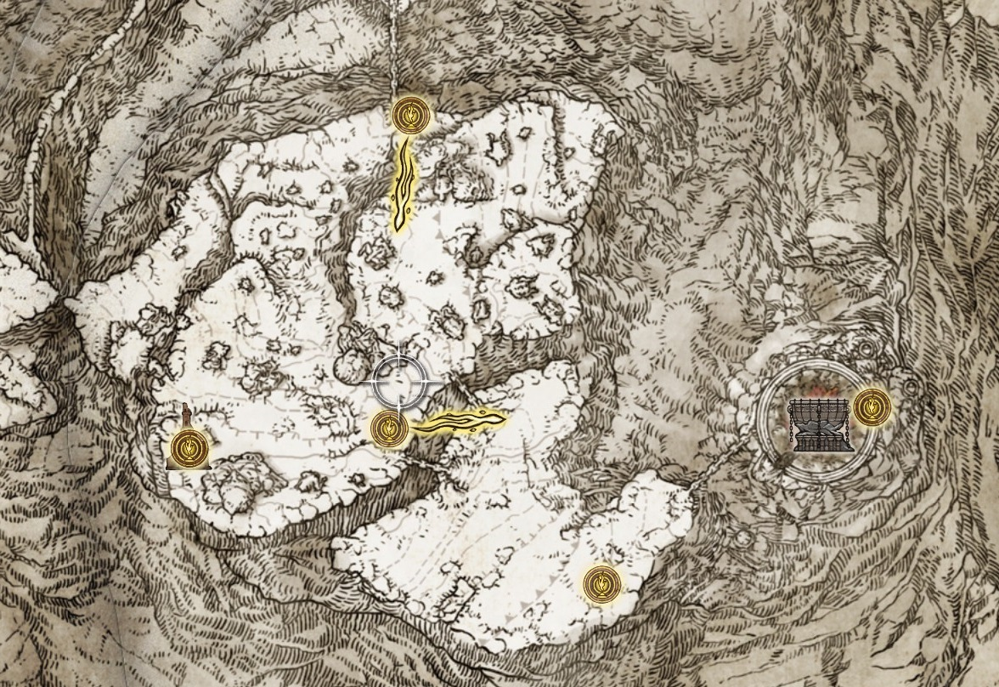
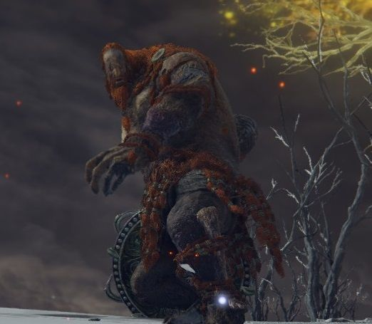

| 返回地图 | 雪山 | 区域介绍 |
|---|---|---|
|  | 当玩家终于到达《艾尔登法环》的后半部分时，冰冷而崎岖的山顶是一场向上的战斗，证明玩家有权站在游戏提供的最终挑战面前。穿越不平坦和覆盖着雪层的山峰并不是一件容易的事，尤其是有扎莫尔骑士在潜伏着。即使玩家在这一点上已经用最好的武器和盔甲武装了自己，他们仍然会发现与火焰巨人战斗是一项艰巨的任务。 | |
| 区域头目 | 头目介绍 | |
|  | 巨人在远古黄金树时代是人类的主要敌人,他们可以引发雪崩,或召来火焰暴风雨,而所谓的巨人战争就是女神玛莉卡找到艾尔登之王葛孚雷战士荷莱露去和巨人打仗,打的巨人一族只剩下了最后一个火焰巨人。 | |